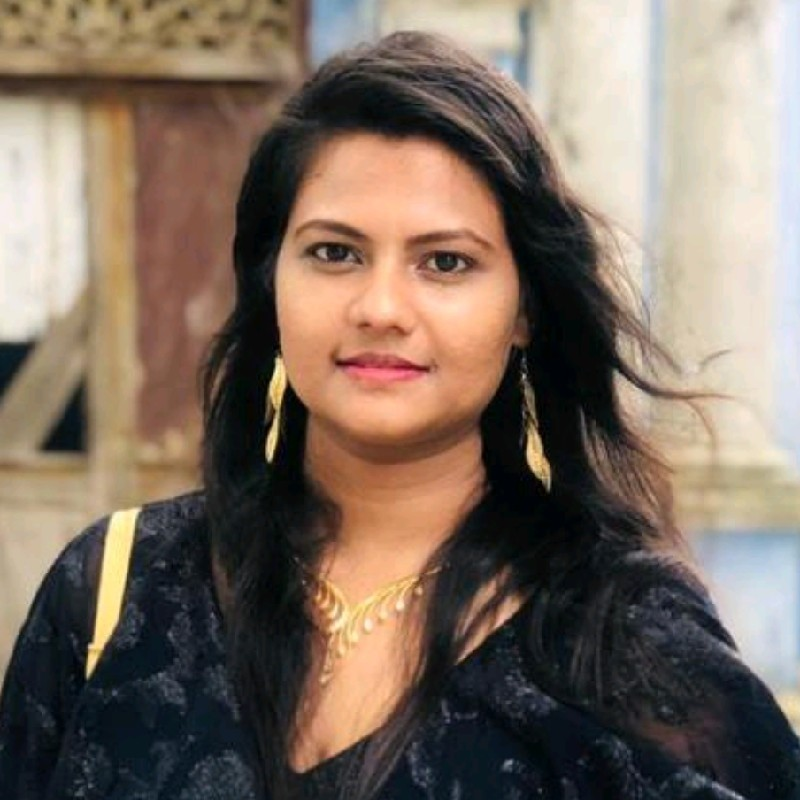

Dulakshi RB
Full-stack Developer

Summary
I am a professional, versatile, and passionate programmer in my daily
life. I am a quick learner and have a self-learning attitude. I enjoy
learning and exploring new technologies and am passionate about
problem-solving. I love almost all the stacks of software engineering.
Education
-
Higher National Diploma in Software Engineering (Distinction - GPA: 3.85
/ 4.0)
National Institute of Business Management (NIBM) - Sri Lanka (August 22,
2022)
-
Diploma in Software Engineering (Distinction - GPA: 3.91 / 4.0)
National Institute of Business Management (NIBM) - Sri Lanka (August 28,
2020)
Work Experience
-
Web Developer - The Idea Hub
September 2019 - Present
-
Developed responsive websites and web applications based on client
requirements.
-
Managed hosting and performed website maintenance for optimal
performance and security.
Technical Skills
- Front-End: HTML
- Back-End:
- Database:
- Technologies:
Soft Skills
I prioritize communication, teamwork, creativity, empathy, accountability,
patience, confidence, collaboration, and time management.